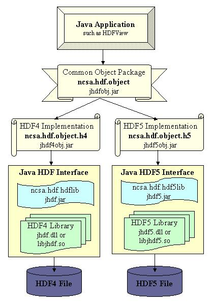
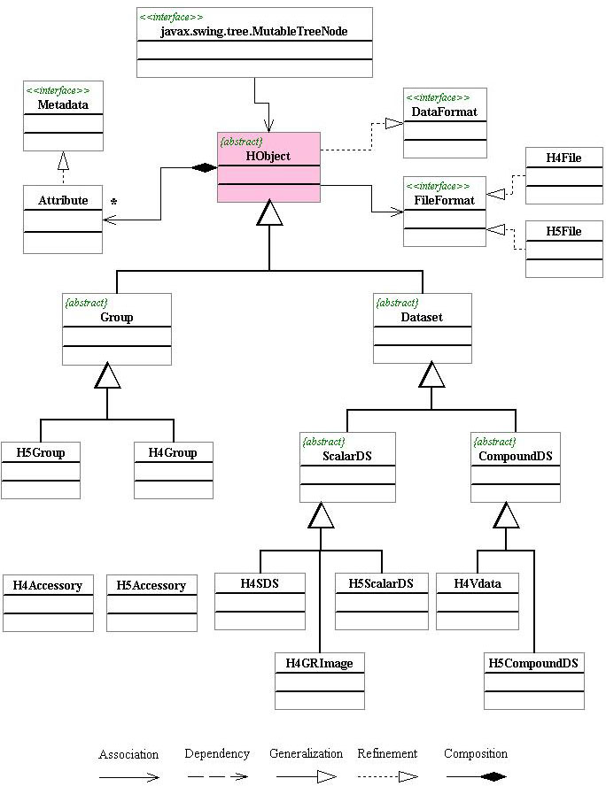

| Download Use and Examples |
The design and class hierarchy of the HDF Object Package are described in this document. Refer to Use and Examples for information on using the package.
The HDF Object Package is a Java package that provides an object-oriented interface to HDF data objects. The package offers a common API to access both HDF4 and HDF5 files.
The HDF Object Package does not provide a one-to-one mapping from Java methods to routines in the standard HDF4 and HDF5 libraries. The one-to-one mappings are provided via the HDF Java Native Interface products Java HDF Interface (JHI) and Java HDF5 Inteface (JHI5). The HDF Object Package wraps these direct mappings with a higher level object model.
The HDF Object Package, ncsa.hdf.object, provides classes that reflect the fundamental objects of the two HDF formats. Fundamental objects from HDF4 (group, multi-dimension array, raster image, vdata, and annotation) and HDF5 (group and dataset) are presented as Java classes in the HDF Object Package.
There are three major advantages offered by the HDF Object Package:
The ncsa.hdf.object.h4 is an implementation of the HDF4 objects. It implements the interfaces and abstract classes defined at ncsa.hdf.object package. The HDF4 object package requires the HDF4 Java Native Interface (ncsa.hdf.hdflib). Application should not include this package so that it compiles and runs without the HDF4 library.
The ncsa.hdf.object.h5 is an implementation of the HDF5 objects. It implements the interfaces and abstract classes defined at ncsa.hdf.object package. The HDF5 object package requires the HDF5 Java Native Interface (ncsa.hdf.hdf5lib). Application should not include this package so that it compiles and runs without the HDF5 library.

Figure 1. The Object Package.
Figure 1 shows the class hierarchy of the HDF Object Package.
The classes are explained in the Java class document the Javadocs.

Figure 2. The Class Hierarchy of HDF Objects.
Prerequisites
The HDF Object Package requires the Java HDF Interface (JHI) and the Java HDF5 Interface (JHI5). These are included in the distribution.
The HDF Object Package was developed using Java 2 SDK (JDK 1.2.x and JDK 1.3.x). The HDF Object Package no platform specific code, and should work on any system with Java JDK 1.2.x or JDK 1.3.x. At the time of the release, the code has been tested on Solaris, Linux, Windows 98/NT, and SGI IRIX 6.5.
http://www.hdfgroup.org/ftp/HDF5/hdf-java/Binary release
The binary release includes jar files for the HDF Object Package, the JHI (HDF4 library interface) and JHI5 (HDF5 library interface). The native libraries are available for selected platforms.
lib/jhdf.jar The Java HDF Interface, accesses the native HDF4 library lib/jhdf5.jar The Java HDF5 Interface, accesses the native HDF5 library lib/jhdfobj.jar The ncsa.hdf.object package lib/jhdf4obj.jar The ncsa.hdf.object.h4 package lib/jhdf5obj.jar The ncsa.hdf.object.h5 package lib/{solaris,linux,irix}/ libjhdf.so The native HDF4 library and JNI implementation (called by jhdf.jar) libjhdf5.so The native HDF5 library and JNI implementation (called by jhdf5.jar) lib/win/ jhdf.dll The native HDF4 library and JNI implementation (called by jhdf.jar) jhdf5.dll The native HDF5 library and JNI implementation (called by jhdf5.jar)
The source distribution includes all the Java source to build the jar files, plus the C source for the native methods of the JHI and JHI5.
The JHI requires the HDF4.1r5 library (binary) and the JHI5 requires the HDF5.1.4.4 library (binary). These are not included in the Java source. They can be obtained from: